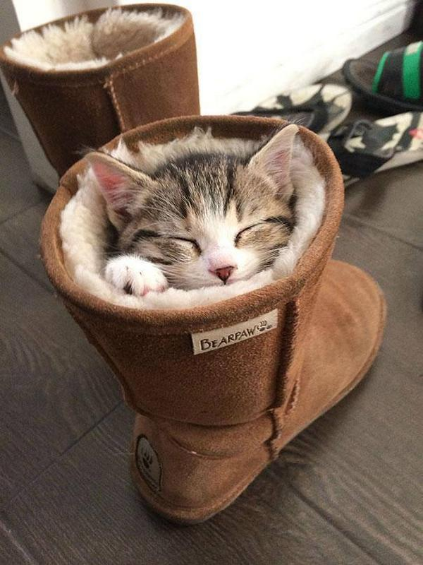
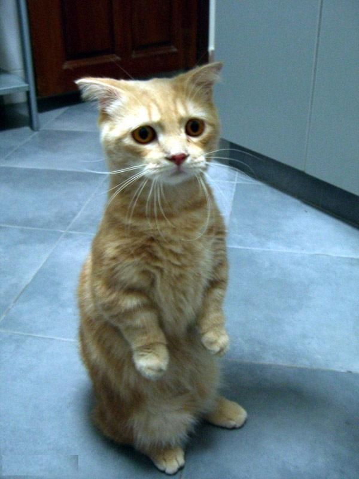
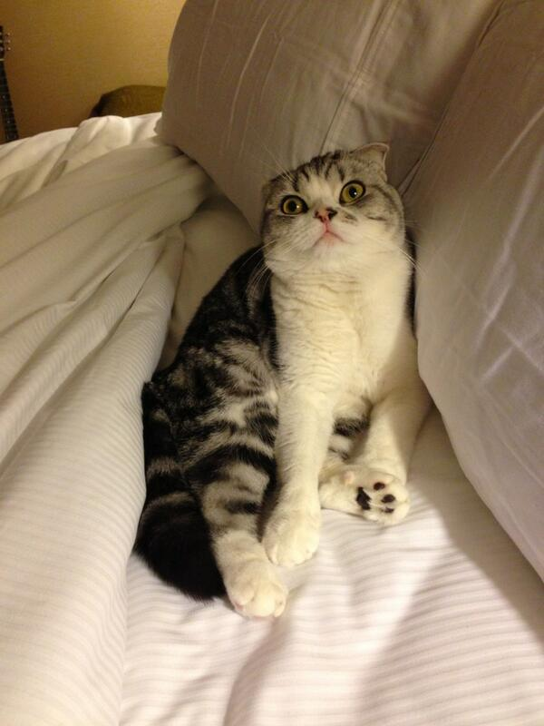
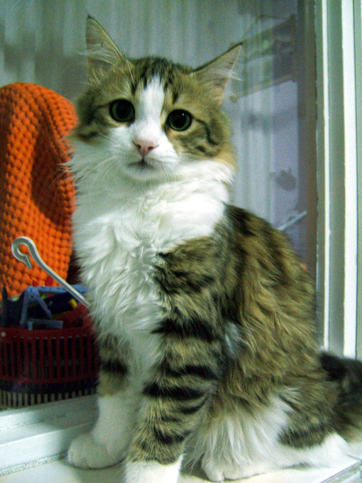

Bienvenido
Cat Finder la nueva forma de buscar gatos

Sólo Gatos
Explore un mundo lleno de gatos

Tu Nueva Mascota
Obten una nueva mascota fácilemente

Totalmente Gratis
Sólo registrate con un email y listo.
Introducción
El gato o gato doméstico (Felis silvestris catus) y coloquialmente llamado minino,1 micho,2 mizo3 o miz;4 es una subespecie de mamífero carnívoro de la familia Felidae. El gato está en convivencia cercana al ser humano desde hace unos 9500 años,5 periodo superior al estimado anteriormente, que oscilaba entre 3500 y 8000 años.
Domesticación del Gato
Como animal de compañía, es una de las mascotas más populares en todo el mundo. Debido a que su domesticación es relativamente reciente, pueden vivir en ambientes silvestres formando pequeñas colonias relacionándose con otros gatos monteses y los seres humanos no controlan el suministro de alimentos o la cría. La asociación del gato con los humanos lo condujo a figurar prominentemente en la mitología y en leyendas de diferentes culturas, incluyendo a las civilizaciones egipcia, japonesa, china y escandinava.
Filogénesis
Según un estudio publicado en la revista Nature en junio de 2007[cita requerida], los ancestros de los actuales gatos domésticos comenzaron a separarse de las líneas salvajes hace entre 130 000 a 100 000 años; otro publicado en la revista Science confirmaba este dato, indicando que los gatos domésticos actuales descienden de un grupo de cinco gatas salvajes que se asociaron al hombre en Oriente Medio hace unos 10 000 años.